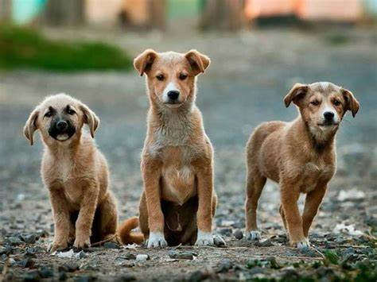
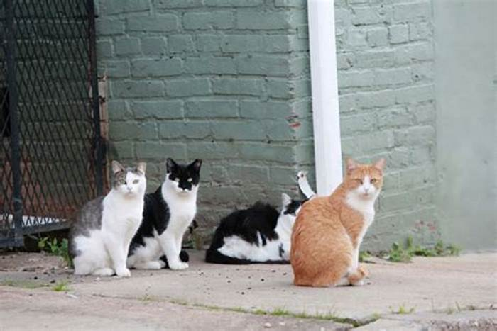
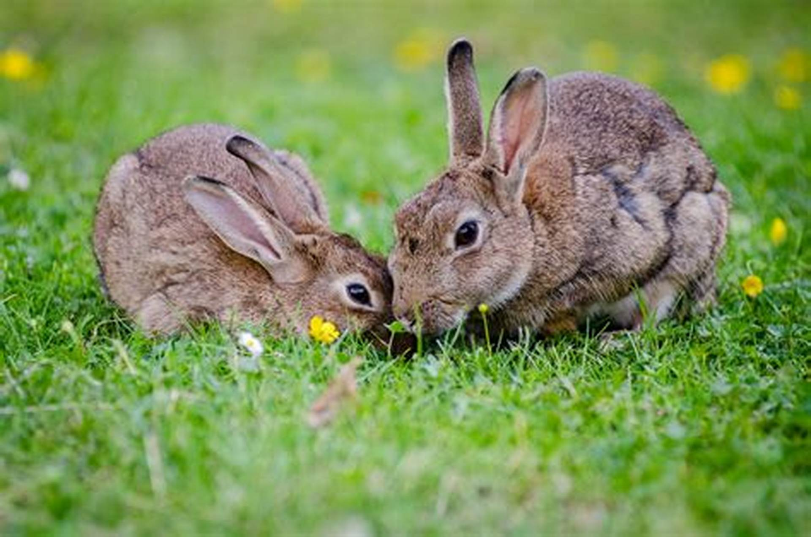

Why Adopt?
Every year, countless animals are abandoned or lost on the streets. By adopting a rescued pet, you are giving them a second chance at life and a loving home. Our rescued pets have been evaluated and are ready to join your family.
Our Adoption Process
1. **Visit Us**: Come to our rescue center and meet our pets.
2. **Application**: Fill out an adoption application to express your interest.
3. **Interview**: We will conduct a brief interview to ensure a good match.
4. **Adoption Fee**: A small fee helps cover the pet's medical costs.
5. **Take Home**: Once approved, you can take your new friend home!
Available Pets for Adoption
Bella
A playful 3-year-old Labrador mix. Bella loves kids and other dogs!
Adoption Fee:As much u can
Whiskers
A 2-year-old tabby cat who enjoys snuggling and quiet time.
Adoption Fee: 100 rupee
Bunny
A gentle 1-year-old rabbit. Perfect for a calm home.
Adoption Fee: 100 rupee